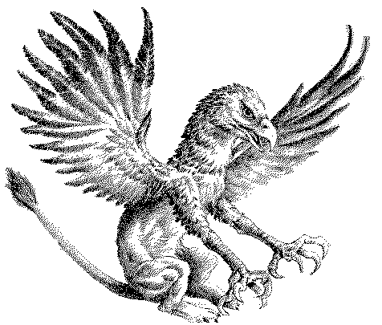

Spirits and other beings.
This page contains texts about
Umbrood, Paradox Spirits, mythologae and other beings.
Roleplaying Games
 Angel/Demon:
The Rapture
Angel/Demon:
The Rapture
 Demon: the Temptation
by Nick Huggins
Demon: the Temptation
by Nick Huggins
General
-
 Spirits in Mage
by Paul Strack.
Spirits in Mage
by Paul Strack.
-
Spirits in Mage
by Paul Strack (Updated version for Mage
Second Edition).
-
Mythologae
.
-
Mythological beings.
-
Care and Handling of Spirits
by Peter Tupper.
-
About various kinds of spirits and their uses, abilities
and dangers.
-
Spirit Charms
by Rev. Kinesis
Nephandi-related beings
-
Nephandi Classifications
by Martin Terman
-
About various kinds of Nephandi and their Master
beings.
-
An Alien Entity
by Datawolf
-
A response to the above essay, mentioning a strange
being.
-
The Liquid People
-
The Eater of Souls
-
The Eater of Souls, a very nasty being who feeds on the
Avatars of its victims.
-
Fasoma Span, The Horror That Spans Dimensions, and Its
Minions
-
The Eater of Dimensions and the Teacher
-
Two powerful Nephandi-related beings.
-
Gremlins and The Nameless God
-
A kind of small Qliphotic entities and a very strange
godlike being.
Paradox Beings
-
The Temptress
.
-
The Temptress, a powerful Paradox spirit.
-
Purgatories
.
-
About a certain type of Paradox-realms and the kind of
Paradox Spirits called Nepharites.
-
Some Paradox Spirits
.
-
The Horror
.
-
A mage warped by Paradox into a kind of Paradox-being.
-
About Sapphire and Steel Spirits
by David Hood.
-
Weaver spirits protecting reality.
-
The Acrophage
-
A spirit attacking mages filled with hubris.
-
Aleph
by Timothy Gaastra
-
One of the nastier Correspondence spirits.
-
The Judge
by Paul Strack
-
One of the most fearsome paradox spirits.
-
The Chaos Butterfly
-
A small but potentially dangerous Entropy paradox
spirit.
-
Shadowing Lemmas
by CD Skogsberg.
-
High Umbral beings who stalk and eat mathematicians.
-
Chronomancer
-
A group of time paradox spirits.
Independent Beings
-
Powerful
-
The Fates - Southern Style
by Rev K.
-
A new take on the three-in-one.
-
Choronzon
-
The demon Choronzon, the Lord of Dispersion.
-
Baphomet
.
-
About Baphomet, the manifestation of the Life Force.
-
Leviathan
by Christopher Bova
-
About how Leviathan and the Cenobites can be integrated
into the WoD.
-
The Return of the Ancient One
-
A Gnostic tale of how Chronos returned to the world.
-
The Blood of the Tenth Beast
-
A story about one of the great primordial beasts.
-
The Dark Pine Lodge
by Adam Simpson
-
The Souls of Cities
-
The Knocker
by Stuart Orford
-
The Egyptian Gods
Significant
-
The Helsdottir
by Ben Buckner.
-
The Children of Hel, a bloodline (?) of beings dwelling in
the arctic night.
-
About Nephilim, the Fallen Ones
.
-
A small crossover with the game Nephilim from
Chaosium.
-
The Spirit of Technology
-
An independent spirit interested in technology.
-
About Deamons
by John R. Snead.
-
The Cenobites
by Duncan J Wilson.
-
The servants of Leviathan from the stories by Clive
Barker.
-
The Angel of Pain
-
The personification of pain.
-
434 ZHJ
-
 Gargoyle Home
Page
Gargoyle Home
Page
-
Gargoyles are wonderfully Gothic, and fit quite well in
mage...
-
Omega 14
-
A strange painting, hiding an even stranger being.
Minor
-
About Elementals
.
-
The Linguistic Entities
.
-
Extremely odd beings (?).
-
Little Nasties
-
Minor beings who hang around mages.
-
Electronic Cats
-
Not all cats are natural...
-
Something about cats...
by CD Skogsberg
-
What are they really doing?
-
Shadowmoths
-
Devourers of entropy.
Mixed
-
Various Umbrood Beings
.
-
The Lord of Maiming, The Fool, PSI.SYS, the Friend and
others .
-
Indian Spirits
by David Noonan.
-
A Friend of the Family: Souleaters in the World of Darkness
by Alexander Shearer
-
A form of parasitic group-minds, infecting all kinds of
beings.
Technocracy Beings
-
Proteus
by Shelby Babb
-
One of the Progenitors most successful experiments.
-
The Monitors
by Michael M. Moolick.
-
Spirits/Satellites used by the Void Engineer to track
intruders, defend
-
The Hubble Monitor
by Michael Moolick.
-
The Void Engineer spirit inhabiting the Hubble
Telescope.
-
Glitch Monitors
by Michael Moolick.
-
Techno-spirits used for sabotage.
-
Restriction Monitors
by Michael Moolick.
-
Digital guardian spirits, protecting the Technocracy
systems.
-
The Surge Monitors
by Michael Moolick.
-
Digital attack spirits, protecting the Technocracy
systems.
Spirit Magick
-
True Diabolists
by Chris Mangum
-
About those mages who deal with demons.
-
Goetic
Elemental Summonings
-
Goetic
Demon Summonings
-
Spirit Rotes
-
My Master's House
by Mark Kilfoil.
-
A short story.
-
Nubeb the Gesturer
-
A very nasty little fetish.
Recent
Changes.
 Back to Anders Mage Page
Back to Anders Mage Page
Anders Main Page
Anders Sandberg / nv91-asa@nada.kth.se